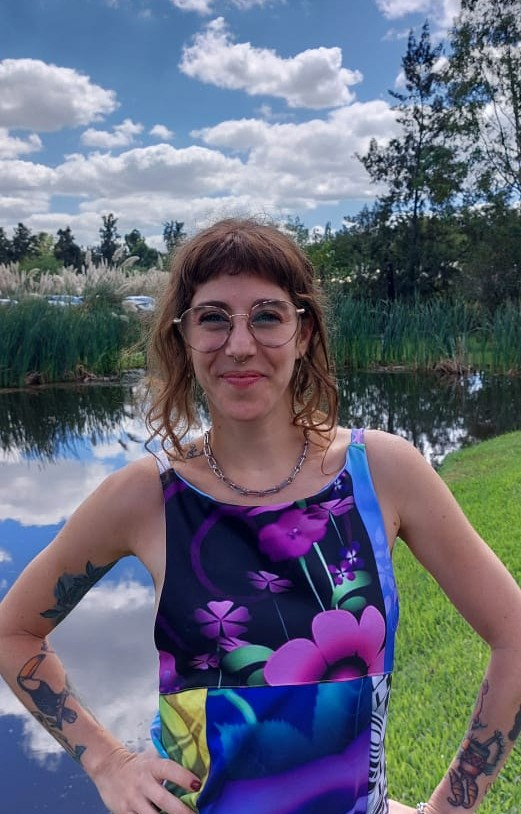

Welcome to my logician website!

I am a Postdoctoral Fellow at CONICET (National Scientific and Technical Research Council of Argentina) in Buenos Aires, Argentina. My specialization is in logic and philosophy of logic, and I teach Logic at the Philosophy Department of the University of Buenos Aires (UBA).
I graduated from Linguistics at the University of Buenos Aires in 2016. In 2024, I received a PhD in Philosophy from the same institution. During my PhD years, I was also granted a scholarship from CONICET.
My areas of expertise are indicative conditionals, inferentialism, and proof-theoretic semantics. My training is mainly in non-classical logics. I also have an interest in vagueness, theories of truth, and problems related to formal epistemology, such as belief revision, preference change, philosophy of probability, and theory choice. I also have a great interest in philosophy of language and philosophy of science.
I am a member of the Buenos Aires Logic Group, of the Sociedad Argentina de Filosofía Analítica (SADAF), and I am part of the Editorial Committee of the journal Análisis Filosófico.
In my spare time, I love to train wushu/kung fu and bake vegan pastry.